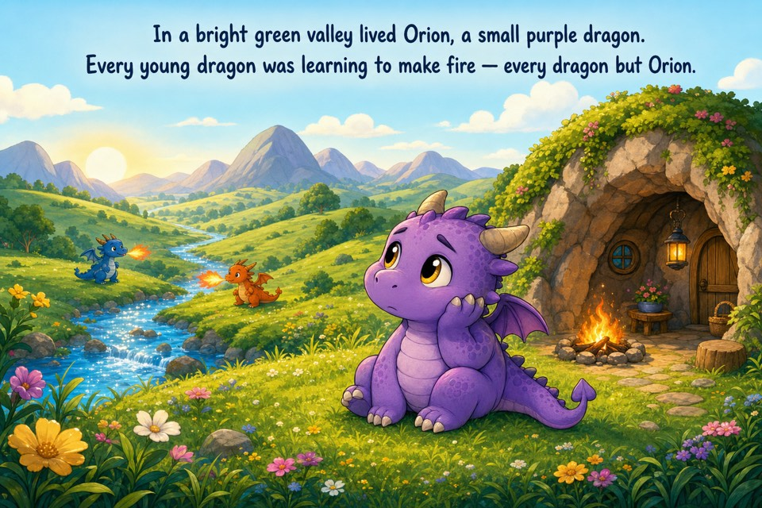

A generated WeaveMark storybook
Orion and the Hunt for His Spark
A small dragon learns that curiosity, patience, and kindness can kindle a spark that force cannot.

A generated WeaveMark storybook
A small dragon learns that curiosity, patience, and kindness can kindle a spark that force cannot.
